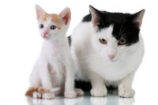

|  |
|
| Us³ugi |
|
- profilaktyka chorób zaka¼nych: szczepienia psów, kotów, tchórzofretek, królików - zwalczanie paso¿ytów wewnêtrznych i zewnêtrznych - diagnostyka i leczenie chorób psów, kotów, tchórzofretek, królików oraz gryzoni - podstawowe zabiegi chirurgiczne - badania morfologiczne i biochemiczne krwi przy u¿yciu aparatury przeznaczonej do badania próbek zwierzêcych - testy w kierunku chorób zaka¼nych - badania ka³u, moczu, zeskrobin, wymazów, wycinków tkanek i próbek pochodz±cych z biopsji - badanie EKG - antykoncepcja hormonalna - okre¶lanie optymalnego terminu krycia suk - sterylizacja suk pochodz±cych z terenów wiejskich we wspó³pracy z fundacj± "Zwierzêta i my" - ultrad¼wiêkowe usuwanie kamienia nazêbnego - mikrochipowanie i wystawianie paszportów dla psów, kotów i tchórzofretek - urzêdowa obserwacja zwierz±t w kierunku w¶cieklizny - porady dietetyczne i sprzeda¿ karm weterynaryjnych |
 |
 |
Copyright © Weterynarz Turek 2011 |